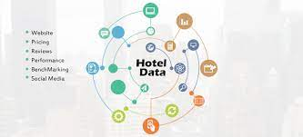

Wix: Wix is a user-friendly website builder with a drag-and-drop interface. It offers a variety of templates and allows you to create a website without any coding skills. Weebly: Another intuitive website builder, Weebly is known for its simplicity. It provides customizable templates and e-commerce capabilities.WordPress.com: While WordPress is often associated with self-hosted sites, WordPress.com offers free hosting with a WordPress subdomain. It's a good option for those who want the flexibility of WordPress without managing hostingEach distinct day gives you an opportunity to learn, progress, and do the things that push you toward your goals or that make you satisfied at the end of the day. Web Design helps to make your web pages stand out in terms of design and user experience. It integrates technical and creative skills, by which you can build and maintain web pages very easily Web design encompasses a variety of elements that contribute to the overall look, feel, and functionality of a website. Here are some key components and considerations in web design.
Web design encompasses a variety of elements that contribute to the overall look, feel, and functionality of a website. Here are some key components and considerations in web design: 1. Layout: The arrangement and organization of elements on a web page. This includes the positioning of text, images, and other elements to create a visually appealing and user-friendly design. 2.Color Scheme:The choice of colors used in a website can impact its aesthetics and convey a particular mood or brand identity. A cohesive color scheme enhances the overall design. 3.Typography:The selection and styling of fonts for the text on a website. Typography plays a crucial role in readability and can contribute to the overall design aesthetic. 4.Images and Graphics:The use of visual elements, including photographs, illustrations, icons, and other graphics, to enhance the visual appeal and communicate information effectively. 5. Navigation: The structure and organization of menus and links that help users navigate through the website. Intuitive navigation is essential for a positive user experience. 6. Responsive Design: Creating websites that adapt and display effectively on various devices and screen sizes, such as desktops, tablets, and smartphones. 7. User Interface (UI) and User Experience (UX):UI focuses on the design of interactive elements and controls, while UX involves the overall experience a user has while interacting with a website. Both are critical for a successful website. 8. **Loading Speed: Ensuring that web pages load quickly is crucial for user satisfaction and search engine optimization. Optimizing images, code, and other elements contributes to faster loading times. 9. Browser Compatibility: Designing websites that work consistently across different web browsers to ensure a consistent user experience. 10. Content: The information presented on the website, including text, multimedia, and interactive elements. Content should be relevant, engaging, and easy to understand. 11. Call-to-Action (CTA):Encouraging users to take specific actions, such as filling out a form, making a purchase, or contacting the business. CTAs are strategically placed to guide user interactions. 12. Security: Implementing security measures to protect user data and ensure a safe browsing experience. 13. Search Engine Optimization (SEO): Incorporating elements that improve a website's visibility in search engine results, such as relevant keywords, meta tags, and proper HTML structure. 14. Accessibility: Designing websites to be accessible to people with disabilities, ensuring that all users can navigate and interact with the content. 15. Feedback and Iteration: Collecting feedback from users and analyzing website analytics to make continuous improvements and updates to the design. These elements collectively contribute to a well-designed and functional website that meets the needs of both the site owner and its users.
Hotel Name Room Available Location Rating Price per Room H1 4 Bangalore 5 100 H2 5 Bangalore 5 200 H3 6 Mumbai 3 100
The task is to answer the following question. Print the hotel data. Sort hotels by Name. Sort Hotel by highest rating. Print Hotel data for Bangalore Location. Sort hotels by maximum number of rooms Available. Print user Booking data.
Create classes for Hotel data and User data. Initialize variables that stores Hotel data and User data. Create Objects for Hotel and user classes that access the Hotel data and User data. initialize two vector array that holds the hotel data and user data. solve the Above questions one by one.